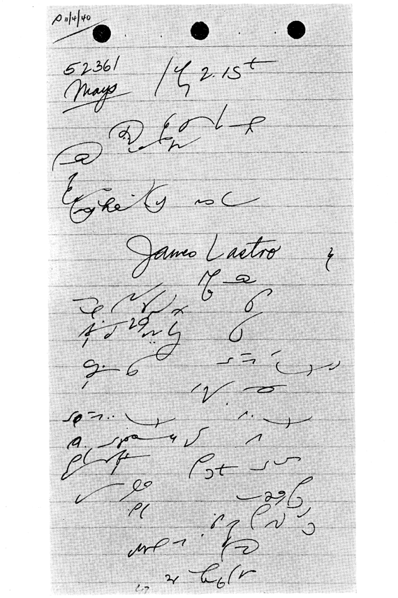

Notes of Norman C. McKnight (Los Angeles, California)
Norman McKnight’s notes are selected for analysis for more than one good reason. First of all, he was a member of the Gregg Clinic Committee; he was one of the fastest writers of the system, as attested by his work in the national contests; but, particularly, because his notes are especially interesting and provocative. They are not the usual Gregg notes that one sees in the magazines. Not that they do not possess the same workmanlike characteristics—penmanship, mastery of principles, and facility of execution—of notes f other good writers. They possess all those points of quality to a high degree, but still they are not usual notes.
For McKnight was an experimenter. Every reporter is more or less of an experimenter, I know, but McKnight’s experiments have been of a more free and untrammelled type, so that his style was an extremely individualistic one.
To begin with, note his first outline “judge on the bench.” Observe that “on the” is expressed by o-anticlockwise th. This is a definite principle with McKnight, and not an isolated shortcut. He writes o-th-a for “on that”; o-th-s for “on those”; o-th-m for “on them”; and o-th-s for “on this,” the s in this last outline being a continuation of the anti-clockwise th, resembling the final backward flourish we often give to outlines when we are feeling particularly good! The outline must be seen really to appreciate it. All of the th’s employed in this principle are anti-clockwise th’s. The principle consists of omitting the n and using in all instances the backward rather than the forward th, thus saving one stroke in each of the phrases.
This single page of notes displays several other unorthodox but ingenious shortcuts that McKnight worked out with obvious care and consistency. I say “consistency,” because none of them is an isolated expedient—they are all parts of definite principles that he has devised for himself.
Note the phrase “at the end.” At the is expressed in this phrase by a simple t started below the line of writing. The principle in this respect is to omit “at” but to begin the rest of the phrase below the line—except that he apparently expressed “the” by t instead of the standard th. Another illustration of this principle on this page is “at that time.”
“Counsel table,” “liquor store,” and “did you arrive,” are all very good orthodox phrases.
McKnight also carried his experiments to the writing of the digits. Note how he writes the figure 5 in the first line; the figure 9 in the “29th of October”; and how he writes the figure 3, which occurs several times near the end of the page. The figure 5 becomes simply the letter s; and Swem could, from experience add his testimony to the effectiveness of this particular shortcut, for he used it for years; and also used a 3 which is in effect the same as McKnight’s.
Note “afternoon,” expressed by the backward th-n-oo; “answer” (n-s above the line), and several other outlines that illustrate the highly characteristic style of the writer. If they look strange to you, don’t pass them over as badly written outlines, for they are not. They are deliberately and skillfully formed that way. In fact, no writer who is not gifted with supreme hand control could successfully write such an abbreviated style as this.
McKnight’s extraordinary control and facility of execution are readily displayed in some of his more orthodox phrases, such as “about what time did you see him,” “City and County of Los Angeles,” “what was the last,” and “the people are ready,” this last phrase being especially intriguing. —C.L.S., Edited by Owen

Transcript:
(Judge on the bench 2:15 P.M.)
The Court: People against Joe Mays.
Mr. Schaffer: Ready for the defendant.
Miss Meyer: The People are ready.
(The Clerk: Raise your right hand. (Oath.) Your name, please.)
James Lastro, (s-o-p) a witness produced by and on behalf of the People, having been first duly sworn, testified as follows:
DIRECT EXAMINATION
By Miss Meyer:
Q: Mr. Lastro, do you know the defendant seated at the end of the counsel table?
A: I do.
Q: Did you see him on the 29th of October, 1940?
A: I did.
Q: Where did you see him at that time?
A: In the entrance to the liquor store there at Washington and Main.
Q: In the entrance of a liquor store?
A: It is a liquor store.
Q: That is a place in the City and County of Los Angeles, isn't it?
A: It is.
Q: About what time did you see him?
A: About 3 P.M. in the afternoon.
Q: What time did you arrive at that place?
A: Well, we arrived about 3, and he took the bet about quarter after 3.
Mr. Schaffer: What was the last answer?
(The reporter read the answer.)
We ask the latter portion of that be stricken.
|